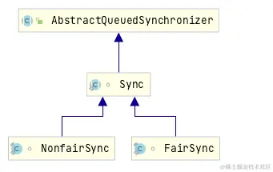
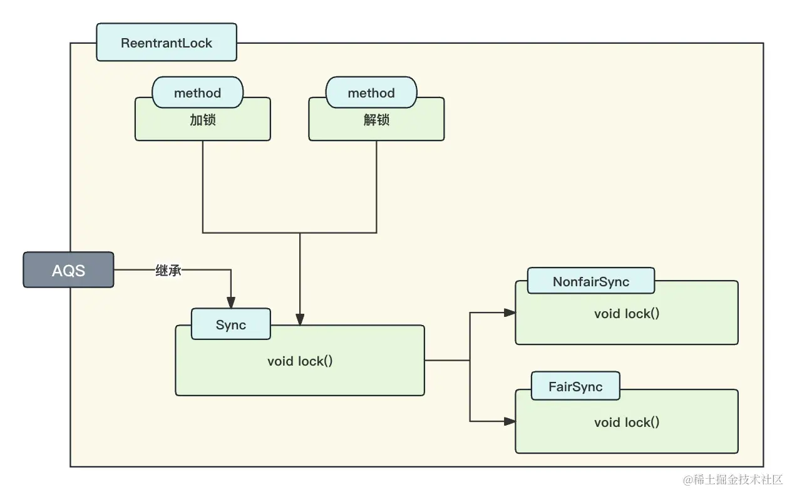
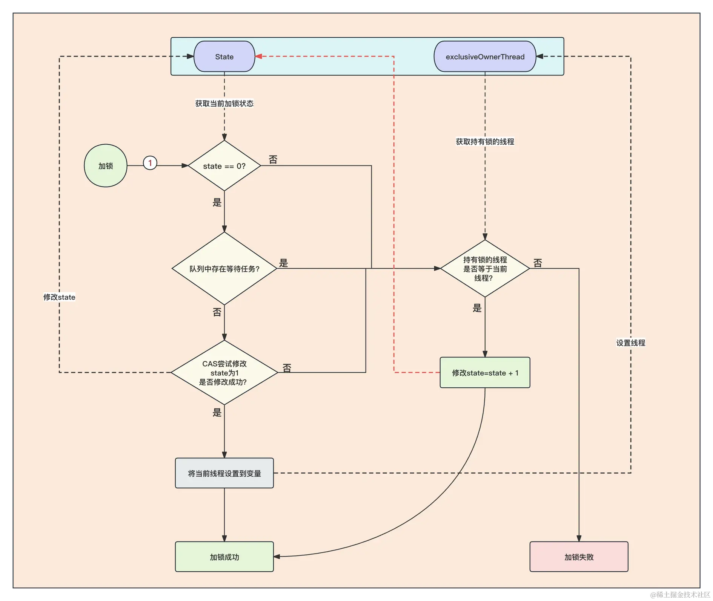
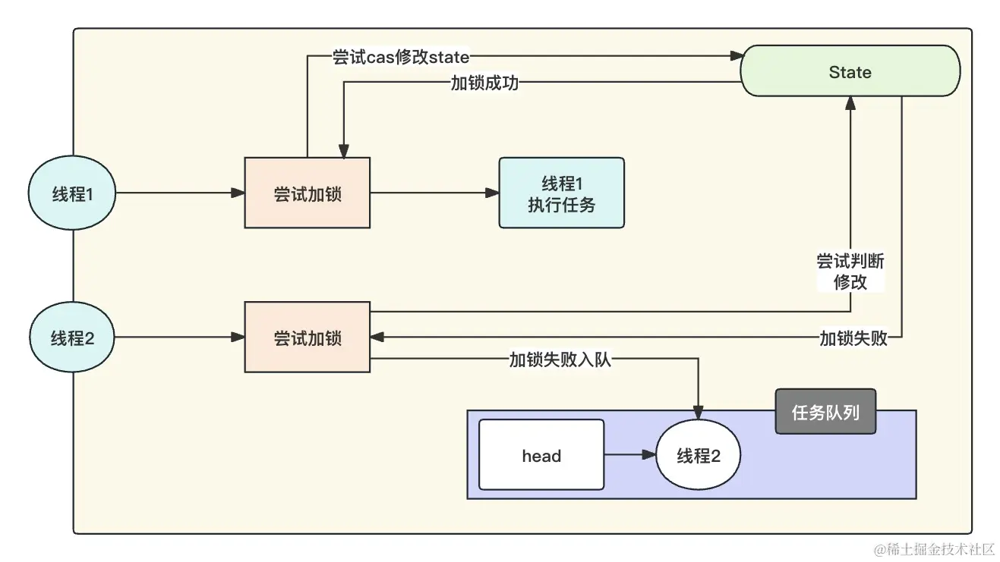
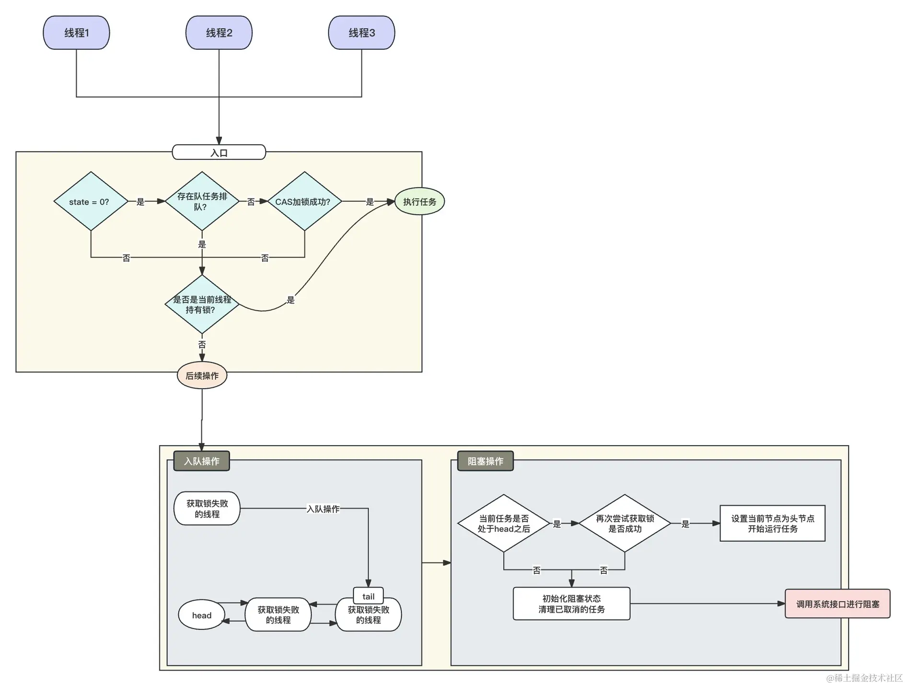
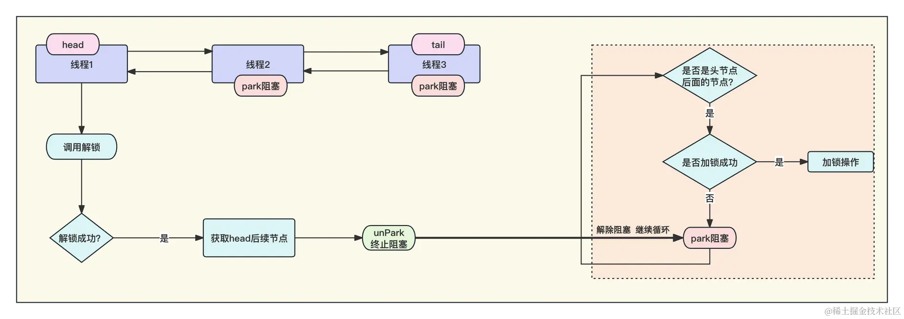

- 01 多线程初阶：解谜多线程世界.md.html
- 02 线程池掌故：管理并发的秘籍.md.html
- 03 锁的奥秘：synchronized 的秘密.md.html
- 04 锁的奥秘：Lock 接口的秘密.md.html
- 05 控制并发流程，并发的巧妙编织.md.html
- 06 ThreadLocal 之珍宝：线程的隐秘宝库.md.html
- 07 CAS：比肩而立的原子魔法.md.html
- 08 容器的魔力：并发世界的宝库.md.html
- 09 结果如何？线程的秘密告白.md.html
- 10 AQS：保证并发安全的终极奥秘（上）.md.html
- 11 AQS：保证并发安全的终极奥秘（中）.md.html
- 12 AQS：保证并发安全的终极奥秘（下）.md.html
- 捐赠
10 AQS：保证并发安全的终极奥秘（上）
我们在前几章节充分学习了如何使用门闩、信号量、锁等手段去保证并发安全，本章节我们将深入分析这些保证并发安全的工具的实现。
在日常开发中，若某一逻辑频繁重复使用，我们通常将其封装成工具类。类似地，AQS（AbstractQueuedSynchronizer）本质上也可视为一种工具类。
我们之前学习的 ReentrantLock、 CountDownLatch、 Semaphore 等工具类，共同具有一个特性，即能够限制同时执行某一任务逻辑的数量。在开发中，我们一般会将这个控制任务并发数量的功能抽象出来，可以使 ReentrantLock、 CountDownLatch、 Semaphore 等工具类的实现更加简洁。实际上，Java 并发包（JUC）正是采用了这种设计方式。
在学习 AQS 之前，我们需要事先说明，AQS 并不是一个类似于前面学到的锁、累加器一样的东西，你学完了就直接应用在项目上，AQS 更像是对我们前面所学的一个深入的补充，针对我们前面所学将它的原理搞清楚。
AQS 是 Java 并发包的核心，它的理念和设计思想贯穿于 Java 中许多并发工具和框架，如 ReentrantLock、Semaphore、CountDownLatch 等。通过学习 AQS，你可以更深入地理解并发编程的机制和原理。
后续我们将以 ReentrantLock 作为切入点来讲述 AQS 的思想。
一、AQS 在 ReentrantLock 的应用
首先，我们分析所谓的 AQS 是如何运用在 ReentrantLock 中的。
我们要知道，AQS 在 Java 中对应的实现为 java.util.concurrent.locks.AbstractQueuedSynchronizer，它的定义方式为：
public abstract class AbstractQueuedSynchronizer extends AbstractOwnableSynchronizer implements java.io.Serializable {}
从定义上看，它是一个抽象类，那么就必然存在不同的实现方式，我们以 ReentrantLock 作为切入点。
1. AQS 在 ReentrantLock 的使用方式
我们通过 ReentrantLock.lock() 进入，看看它是如何利用 AQS 的：
public void lock() {
sync.lock();
}
我们这里能够看到，它是调用了一个 sync.lock() 来实现的加锁操作。我们进入到 sync，它是一个 ReentrantLock 的内部类，定义为：
abstract static class Sync extends AbstractQueuedSynchronizer {}
可以看到，它还是一个抽象类，那么对于它的实现如下图所示：

从上图的名字上可以看出来，Sync 类对于 AQS 有两种实现：java.util.concurrent.locks.ReentrantLock.NonfairSync和java.util.concurrent.locks.ReentrantLock.FairSync。
它们都是 ReentrantLock 的内部类，我们在前文学习过，ReentrantLock 有两种加锁方式，一个是公平锁，一个是非公平锁，那么从名字就能看出来，这两种实现对应了 Lock 加锁的两种方式。这一点在 ReentrantLock 的声明中也能够看出来：
public ReentrantLock(boolean fair) {
sync = fair ? new FairSync() : new NonfairSync();
}
好，学习到这里，我们知道了 ReentrantLock 锁是如何定义 AQS 的，我们来使用一张图来描述 ReentrantLock 对于 AQS 的应用：

我们分析下上图，在 ReetrantLock 中存在加锁和解锁两个方法，这两个方法是借助 Sync 这个内部类来完成的。Sync 这个内部类实现了 AQS 抽象类，并实现了公平锁和非公平锁两种加锁方式！
简单来说，ReetrantLock 的加解锁功能其实是基于 Sync 的两个实现类来完成的。具体 Sync 的实现类做了什么，我们在后面进行分析。
2. 加锁时 Sync 做了什么？
我们先以公平锁为例。
基于前面所学，我们需要进入到 FairSync 中，查看它对于 Sync 的 lock 方法的实现：
final void lock() {
acquire(1);
}
可以看到，FairSync 的实现直接调用了 AQS 的 acquire 方法，且传递的参数是 1。我们进入到 AQS 的 acquire 方法：
public final void acquire(int arg) {
if (!tryAcquire(arg) && acquireQueued(addWaiter(Node.EXCLUSIVE), arg))
selfInterrupt();
}
在判断条件中，我们是能够看到三个方法的（tryAcquire、addWaiter、acquireQueued），下面针对这三个方法进行针对性的讲解。
1. tryAcquire
tryAcquire 会直接调用具体的实现，也就是公平锁的 FairSync#tryAcquire 方法。我们查看其源码：
protected final boolean tryAcquire(int acquires) {
//获取当前的线程
final Thread current = Thread.currentThread();
//获取当前的加锁状态 在ReentrantLock中，state=0的时候是没有加锁，state=1的时候是加锁状态
int c = getState();
if (c == 0) {
// 没有人占用锁的时候，因为是公平锁，所以优先判断队列中是否存在排队的
// 如果没有排队的，直接使用CAS进行加锁，将0 替换为 1，
if (!hasQueuedPredecessors() &&
compareAndSetState(0, acquires)) {
// 将当前线程设置到exclusiveOwnerThread变量，表示这个线程持有锁
setExclusiveOwnerThread(current);
//返回加锁成功
return true;
}
}
//我们在前面讲过，ReentrantLock是可重入锁，当前面逻辑加锁失败，则判断是不是当前线程持有的锁，如果是当前线程持有锁，则符合可重入规则
else if (current == getExclusiveOwnerThread()) {
//将state 累加 由 1 变成 2
int nextc = c + acquires;
if (nextc < 0)
throw new Error("Maximum lock count exceeded");
setState(nextc);
return true;
}
//如果存在排队任务，或者CAS变换state的值失败，则证明当前不能加锁，直接返回false加锁失败
return false;
}
上面代码的注释能够印证出我们前面所学的，公平锁、可重入锁、CAS 的特性。
- 首先进行加锁的时候，因为公平锁的原因，会先判断等待队列中是否存在任务。如果存在，就不能去加锁，需要去排队！如果没有排队的任务，那么就开始使用 CAS 进行加锁，此时可能会出现其他线程也在加锁，如果其他线程加锁成功，那么此时 CAS 就会返回 false。
- 假设上面的加锁条件全部满足，就能够加锁成功，它会将 state 变为 1，将当前线程设置到一个变量中去，并且为了保证重入锁的特性，将当前线程保存到变量中，表示这个线程持有这把锁。
- 如果上面的加锁条件不满足，不会第一时间就返回加锁失败，因为 ReentrantLock 是可重入锁，所以在加锁失败后，会判断当前持有锁的线程和所需要加锁的线程是不是一个，如果是一个就附和可重入锁的特性，那么就把加锁数量 +1，同时返回加锁成功。
- 如果全部都不满足，则直接返回 false，加锁失败。
我们使用一个图来理解这个流程：

可以看到，其实所谓的加锁其实就是操作 State 变量的值！
2. addWaiter
按照 Java && 的逻辑，!A && B，当 A 成立后，会开始判断 B，也就是说，当 tryAcquire 方法加锁失败返回 false 后，就会执行 acquireQueued 方法，对照方法就是 acquireQueued(addWaiter(Node.EXCLUSIVE), arg)。
线程加锁失败后，会开始进行入队操作，也就是 addWaiter 方法。AQS 的队列与传统队列不同，AQS 的队列是一个双向链表，排队的线程都是用 next 指向下一个节点任务。head 节点可能为空，因为当第一个任务入队的时候，会初始化 head 节点，head 节点内线程数据为空，但是 head 节点的 next 会指向第一个等待线程，它的结构如下：
当一个任务入队的时候，它会将入队节点设置为 tail，将原本的 tail 节点设为当前节点的下一级节点，具体的操作我们看源码：
private Node addWaiter(Node mode) {
//创建一个node节点 排它锁的mode = null
Node node = new Node(Thread.currentThread(), mode);
// 获取当前的尾节点
Node pred = tail;
if (pred != null) {
//将当前节点的上一个节点设置为尾节点
node.prev = pred;
// cas替换 将当前节点设置为tail节点
if (compareAndSetTail(pred, node)) {
//将当前的尾节点的下一节点设为当前追加的节点
pred.next = node;
return node;
}
}
//针对第一个任务初始化head节点操作
enq(node);
return node;
}
上述代码的操作就是一个任务追加的全过程，当一个任务想要追加的时候，需要先获取当前队列中的 tail 节点，然后将当前需要追加的节点的上一节点指针设置为 tail 节点，将 tail 节点的下一节点指针设置为当前节点，然后将当前追加的节点设置为 tail 节点，至此完成双向链表的追加操作。
至于空 head 节点的初始化，这里需要介绍一下，不然后续实现中你不知道 head 哪里来的。我们需要关注 addWaiter 方法中的 enq(node);，因为第一次节点入队，因为 tail 为 null ，实际的入队操作是由 enq 方法来做的。
private Node enq(final Node node) {
for (;;) {
//获取尾节点
Node t = tail;
//当尾节点为空（第一次设置）
//第一次的话，因为还没有追加过节点，所以tail肯定为空
if (t == null) {
//使用cas创建一个线程数据为空的node，放到head中
if (compareAndSetHead(new Node()))
//因为此时只有一个节点，所以这个空节点即是头也是尾
tail = head;
} else {
//后续就和addWaiter方法一样了，主要是吧当前节点追加到这个空的head节点后面。
node.prev = t;
if (compareAndSetTail(t, node)) {
t.next = node;
return t;
}
}
}
}
当第一个等待线程进入到队列的时候，实际的入队操作是由 enq 方法来做的，enq 方法初始化了 head 节点 、tail 节点，并将当前节点追加到 tail 节点后面。
3. acquireQueued
当入队操作完成之后，我们就要将当前线程挂起了，具体就是在 acquireQueued 中来做的。我们先分析源码：
final boolean acquireQueued(final Node node, int arg) {
boolean failed = true;
try {
boolean interrupted = false;
for (;;) {
//获取当前节点的前置节点
final Node p = node.predecessor();
//如果当前节点的前置节点是head节点的时候，当前节点就排在第一个，所以这里会去尝试获取一次锁，万一锁被释放了，
//这里直接就获取到了，不需要调用系统级的阻塞。
if (p == head && tryAcquire(arg)) {
//如果获取到了锁，则将当前的节点设置为头节点
setHead(node);
//将原先的头节点的后置节点设置为null ，为了jvm gc考虑的，保证原先的头节点能够被及时回收
p.next = null;
failed = false;
return interrupted;
}
//如果没有拿到锁，则开始检查并更新获取失败节点的状态。如果线程阻塞，返回true
if (shouldParkAfterFailedAcquire(p, node) && parkAndCheckInterrupt())
//检查是否被中断，如果被中断则返回true， 由selfInterrupt()方法进行当前线程的中断操作
interrupted = true;
}
} finally {
if (failed)
cancelAcquire(node);
}
}
到这里，这个方法我们也分析得差不多了。它的功能很简单，主要就是如果自己排在 head 节点之后，就尝试获取下锁做一次二次检查，检查上一个节点是否已经释放了锁，万一不需要阻塞就可以直接获取到锁，就可以节省一部分性能。
我们需要再来分析一下 shouldParkAfterFailedAcquire 和 parkAndCheckInterrupt，这样整个加锁的动作就被我们分析完了。
shouldParkAfterFailedAcquire 方法
private static boolean shouldParkAfterFailedAcquire(Node pred, Node node) {
//获取前置节点状态
int ws = pred.waitStatus;
//当前置节点状态为等待信号唤醒的时候
if (ws == Node.SIGNAL)
//直接放心大胆的阻塞，因为明显前置节点还在执行任务或者阻塞的状态
return true;
if (ws > 0) {
do {
//开始遍历整条链路，将取消的任务全部剔除掉，保证队列的连续性
node.prev = pred = pred.prev;
} while (pred.waitStatus > 0);
pred.next = node;
} else {
//初始化前面的节点为 Node.SIGNAL 等待唤醒的状态
compareAndSetWaitStatus(pred, ws, Node.SIGNAL);
}
return false;
}
这里针对节点状态（waitStatus）做出一个说明。
- 默认为 0，表示初始状态。
Node.CANCELLED(1)：表示当前结点已取消调度。当 tmeout 或被中断（响应中断的情况下），会触发变更为此状态，进入该状态后的结点将不会再变化。Node.SIGNAL(-1)：表示后继结点在等待当前结点唤醒。后继结点入队时，会将前继结点的状态更新为 SIGNAL。Node.CONDITION-2)：表示结点等待在 Condition 上，当其他线程调用了 Condition 的 signal() 方法后，CONDITION 状态的结点将从等待队列转移到同步队列中，等待获取同步锁。Node.PROPAGATE(-3)：共享模式下，前继结点不仅会唤醒其后继结点，同时也可能会唤醒后继的后继结点。
了解了这些状态之后，shouldParkAfterFailedAcquire 方法总共做了三件事。
- 当发现前置节点是等待信号的状态的时候，证明前置节点还在执行任务或者阻塞的状态，此时可以放心返回，让程序阻塞，因为自己无论如何也执行不了。
- 当前置节点的状态大于 0 的时候，也就是
Node.CANCELLED的时候，证明前置节点被取消等待锁了，此时开始遍历整条双向列表，重置链路状态，将已经取消的全部删除掉。 - 当前置节点状态为 0 的时候，初始化前置节点的状态为等待唤醒的状态（
Node.SIGNAL）。
parkAndCheckInterrupt 方法
当 shouldParkAfterFailedAcquire 方法返回 true 的时候，证明此时加锁条件不满足，可以阻塞了。于是，开始调用系统内核进行阻塞：
private final boolean parkAndCheckInterrupt() {
LockSupport.park(this);
return Thread.interrupted();
}
逻辑十分简单，LockSupport.park(this); 的源码不做具体分析，已经涉及到了操作系统，该方法的具体作用如下：
- 阻塞当前线程： 调用
park方法将导致当前线程进入等待状态，暂停执行。线程会在这里等待，直到被显式地唤醒。 - 与对象关联：
park方法可以关联一个对象。在这里，this参数表示将当前线程与当前对象关联起来。这意味着，如果其他线程调用LockSupport.unpark(this)方法并传入相同的对象，那么被关联的线程将被唤醒。 - 与 unpark 搭配使用：
LockSupport类还提供了unpark方法，可以用于显式地唤醒被park阻塞的线程。通过关联对象，可以选择性地唤醒具体的线程。
LockSupport.park(this) 是用于阻塞当前线程的方法，它通常与 LockSupport.unpark 配合使用，实现线程之间的协同操作。这种方式相比于传统的 wait 和 notify 机制更加灵活，因为LockSupport可以直接与线程关联，而不用处于同一个对象监视器（对象监视器类似 synchronized(o) 里面那个 o，就是对象监视器的对象）。
总的来说，acquireQueued 主要任务就是将等待的队列调用系统阻塞方法进行阻塞，等待唤醒。
此时阻塞之后，for 循环被阻塞，等待解锁成功后，循环继续，就会重新进入到判断前置节点是否是 head 节点，如果是就尝试获取锁的逻辑中。
我们至此针对于加锁操作分析了它的主要源码，我们使用图来总结一下，看一个简化版的加锁逻辑：

简单来说，加锁无非就是通过 CAS 去改变 State 的值，等于 0 且能改变成功就加锁成功，如果改变失败，就入队后阻塞。详细流程图如下：

3. 解锁时 Sync 做了什么？
在上文分析了 AQS 进行加锁的原理以及源码，接下来我们将介绍解锁的原理。
我们可以直接进入到java.util.concurrent.locks.AbstractQueuedSynchronizer#release中：
public final boolean release(int arg) {
//尝试释放锁，当为可重入锁的时候，不将锁全部释放为0 会返回false
if (tryRelease(arg)) {
//释放锁成功后 获取头节点
Node h = head;
if (h != null && h.waitStatus != 0)
//唤醒head节点后的节点
unparkSuccessor(h);
//返回释放锁成功
return true;
}
return false;
}
可以看到，当释放锁成功后，会尝试调用 unparkSuccessor 唤醒等待队列中 head 之后的节点。这里先分析解锁成功后的动作：
- 首先会获取 head 节点，因为我们前面分析过，等待队列是一个双向列表，所以，通过 head 节点就能获取到下一个要执行的节点（公平锁）。
- 尝试唤醒 head 节点后的等待任务，我们查看
unparkSuccessor的源码：
private void unparkSuccessor(Node node) {
//获取head节点当前的状态
int ws = node.waitStatus;
//如果节点的状态是 Node.SIGNAL
if (ws < 0)
//使用CAS将状态更改为初始化的0
compareAndSetWaitStatus(node, ws, 0);
//获取head节点的下一个节点
Node s = node.next;
//判断当前的节点是否被取消
if (s == null || s.waitStatus > 0) {
s = null;
//任务如果被取消，则再次遍历链表，剔除失效的任务
for (Node t = tail; t != null && t != node; t = t.prev)
if (t.waitStatus <= 0)
s = t;
}
if (s != null)
//调用系统级命令进行解锁操作
LockSupport.unpark(s.thread);
}
我们在前文分析过，等待队列中的节点都调用了 LockSupport.park(this) 进行了阻塞，这里如果能够解锁成功后就需要接触对应线程的阻塞，传递对应的线程将对应的线程进行取消阻塞，使线程能够真正执行。
接下来分析是如何解锁的，我们带着两个问题看这个源码：
- 如何解锁的？
- 什么时候解锁成功/失败？
我们进入到 java.util.concurrent.locks.ReentrantLock.Sync#tryRelease 方法中：
protected final boolean tryRelease(int releases) {
//将当前的状态 - 1
int c = getState() - releases;
//如果解锁的线程与持有锁的线程不是一个 直接报错
if (Thread.currentThread() != getExclusiveOwnerThread())
throw new IllegalMonitorStateException();
boolean free = false;
//当加锁次数-1后等于0
if (c == 0) {
//设置解锁成功
free = true;
//将持有锁的线程设置为null
setExclusiveOwnerThread(null);
}
//使用cas 变更当前state的值
setState(c);
return free;
}
我们就上面两个问题根据源码给出答复。
- 解锁就是对 state 进行减一操作（重入次数 -1），当 state = 0 的时候，就将持有锁的线程设置为 null，且返回解锁的结果。
- 因为
ReentrantLock是可重入锁，一个线程多次获取锁，state 的数量会大于 1，当解锁的时候，必须当前线程解锁次数 = 加锁次数才能解锁成功，否则解锁失败。 - 无论是解锁成功与否，都必须将当前 state 的数量使用 CAS 更新为最新的。
至此，公平锁的解锁逻辑我们也分析完了，看下解锁的整体流程：

解锁成功后，会调用 head 节点后的等到任务的 unPark 解锁线程，使得阻塞的线程重新开始循环获取锁的操作，直到获取锁成功。
二、总结
我们在本章节中根据源码详细分析了 ReentrantLock 的公平锁对于 AQS 的应用，对于加锁和解锁操作重点就是操作 AQS 中的 state 状态，可重入锁的情况下，相同线程每加一次锁都会对 state 进行加一操作，每一次解锁都会执行减一操作。当 state 为 0 的时候，证明是无锁状态。
加锁成功后，后续所有获取锁的任务都会进入到等待队列中的双向列表中，同时调用 park 进行线程阻塞，等待解锁成功后调用 unPark 进行终止阻塞，重新执行加锁逻辑。
© 2019 - 2023 Liangliang Lee. Powered by gin and hexo-theme-book.